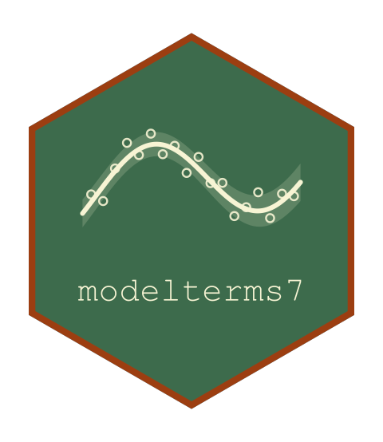

Drawing Break-Points From Their Prior
Source:R/marginal.R
term_simulate.MarginalBreakTerm.RdOne set of latent positions per group, drawn from the prior the term declares, and the predictor each observation gets from them.
Arguments
- term
A built
MarginalBreakTerm().- psi
The term's parameters, on the parameter scale.
- eta
The static part of the predictor.
- draw
Ignored: the positions do not read the response.
- ...
Ignored.
Details
The latent positions are the model here, integrated out of the likelihood and never estimated, so simulating from the model means drawing them, once per group, and then evaluating the term at what was drawn. Under the gaussian prior that is \(N(m_k, \tau_k)\); under an explicit prior it is a draw from that family with its location fixed at zero, shifted by \(m_1\), which is the same convention the likelihood is written with.
The shift is the term's own construction read at the drawn positions: a change of level at each break-point for the step kind, a change of slope for the continuous one, both for the joint one, and the linear term beside them where the term carries it.
The response is not drawn, the positions not reading it, so the caller draws at the returned predictor.